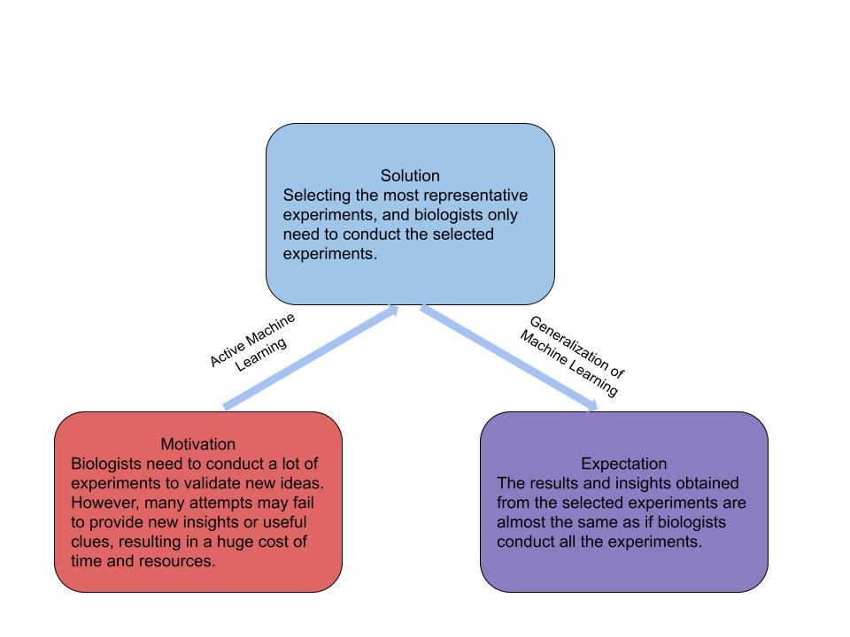

|
Tianyang WangAssistant ProfessorDepartment of Computer Science University of Alabama at Birmingham Birmingham, AL 35294 Email: tw2@uab.edu or toseattle@siu.edu
|
|
About me
I join the University of Alabama at Birmingham in August 2023, serving the department of computer science as a tenure-track assistant professor. I earned my Ph.D. degree in computer science from Southern Illinois University in 2015. I earned my master (computer science) and bachelor (software engineering) degrees from Jilin University, China in 2010 and 2006, respectively. I was a visiting scientist at Baidu Research in 2019. I have been working as a remote researcher in the XuLab at Carnegie Mellon University since 2020.Ph.D. RA Positions: I am actively hiring Ph.D. students to join my group as research assistants. All the positions will be fully funded. The students will have a chance to be recommended to do an internship at CMU, Amazon or Baidu during summer. Interested students are encouraged to email your CV to: toseattle 'AT' siu 'DOT' edu.
Research Collaborations: If you are interested in a research collaboration, please do not hesitate to contact me via: toseattle 'AT' siu 'DOT' edu. We are always open to various fashions of collaborations.
Research
My research interests include AI, machine learning, computer vision, and data science. I am also quite interested in applying AI and machine learning for interdisciplinary research, such as biomedical informatics.|
|
|
|
 |


Publications
A. Deng, X. Li, D. Hu, T. Wang, H. Xiong, and C. Xu. Towards Inadequately Pre-trained Models in Transfer Learning, accepted to IEEE International Conference on Computer Vision (ICCV), 2023.
Z. Zhang, X. Li, T. Wang, T. Hong, J. Ma, H. Xiong, and C. Xu. Overcoming Catastrophic Forgetting for Fine-tuning Pre-trained GANs, accepted to ECML-PKDD, 2023.
J. Li, X. Li, T. Wang, S. Wang, Y. Cao, C. Xu, and D. Dou. Improving BERT Fine-tuning via Stabilizing Cross-layer Mutual Information, in Proc. IEEE International Conference on Acoustics, Speech and Signal Processing (ICASSP), 2023.
S. Huang, T. Wang, H. Xiong, B. Wen, J. Huan, and D. Dou. Temporal Output Discrepancy for Loss Estimation-based Active Learning, in IEEE Transactions on Neural Networks and Learning Systems (TNNLS), 2022.
T. Wang, X. Li, P. Yang, G. Hu, X. Zeng, S. Huang, C. Xu, and M. Xu. Boosting Active Learning via Improving Test Performance, in Proc. AAAI Conference on Artificial Intelligence (AAAI), 2022.
T. Wang, B. Li, J. Zhang, X. Zeng, M. Uddin, W. Wu, and M. Xu. Deep Active Learning for Cryo-Electron Tomography Classification, in Proc. IEEE International Conference on Image Processing (ICIP), 2022.
S. Huang, H. Xiong, T. Wang, B. Wen, Q. Wang, Z. Chen, J. Huan, and D. Dou. Parameter-Free Style Projection for Arbitrary Style Transfer, in Proc. IEEE International Conference on Acoustics, Speech and Signal Processing (ICASSP), 2022.
A. Chharial, R. Upadhyay, V. Kumar, C. Cheng, J. Zhang, T. Wang, and M. Xu.
Deep-Precognitive Diagnosis: Preventing Future Pandemics by Novel
Disease Detection with Biologically-inspired Conv-Fuzzy Network, in IEEE Access, 2022.
S. Chandra, M. Gourisaria, H. GM, D. Konar, X. Gao, T. Wang, and M. Xu.
Prolificacy Assessment of Spermatozoan via State-of-the-Art
Deep Learning Frameworks, in IEEE Access, 2022. X. Li, P. Yang, T. Wang, X. Zhan, M. Xu, D. Dou, and C. Xu.
Deep Active Learning with Noise Stability,
in arXiv, 2022. S. Huang, T. Wang, H. Xiong, J. Huan, and D. Dou.
Semi-Supervised Active learning with temporal Output Discrepancy, in Proc. IEEE International Conference on
Computer Vision (ICCV), 2021. K. Hu, D. Lee, and T. Wang.
Single Image Super-resolution using Vectorization and Texture Synthesis
, in Proc. International Conference on Computer Vision Theory and Applications (VISAPP), 2021.
J. Yuan, H. Abdul-Rashid, B. Li, ..., and T. Wang.
A Comparison of Methods for 3D Scene Shape Retrieval
, in Elsevier Journal of Computer Vision and Image Understanding (CVIU), 2020. D. McGonigle, T. Wang, J. Yuan, K. He, and B. Li.
I2S2: Image-to-Scene Sketch Translation Using Conditional Input and Adversarial
Networks, in Proc. IEEE International Conference on Tools with Artificial Intelligence (ICTAI), 2020.
S. Li, M. Zhou, K. Ze, X. Sun, C. Zhao, Z. Li, H. Lu, Y. Jiao, T. Wang, S. Li, L. Hua,
H. Cai, and X. Li. Protective Role of Histone Deacetylase 4 from Ultraviolet
Radiation-Induced DNA Lesions, in Journal of Molecular Carcinogenesis, 2020. J. Yuan, X. T. Wang, S. Zhe, Y. Lu, and B. Li.
Semantic Tree-Based 3D Scene Model Recognition
, in Proc. IEEE International Conference on Multimedia Information Processing and Retrieval (MIPR), 2020.
T. Wang, J. Huan, M. Zhu.
Instance-based Deep Transfer Learning
, in Proc. IEEE Winter Conference on Applications of Computer Vision (WACV), 2019. K. Hu, L. Yin, and T. Wang.
Temporal Interframe Pattern Analysis for Static and Dynamic Hand Gesture
Recognition, in Proc. IEEE International Conference on Image Processing (ICIP), 2019. T. Wang, J. Huan, B. Li, and K. Hu.
Rethink Gaussian Denoising Prior for Real-World Image Denoising,
in Proc. IEEE International Conference on Tools with Artificial Intelligence (ICTAI), 2019. H. Abdul-Rashid, J. Yuan, B. Li, ..., and T. Wang.
SHREC’19 Track: Extended 2D Scene Image-Based 3D Scene
Retrieval, in Proc. Eurographics Workshop on 3D Object Retrieval, 2019. J. Yuan, H. Abdul-Rashid, B. Li, ..., and T. Wang.
SHREC’19 Track: Extended 2D Scene Sketch-Based 3D Scene
Retrieval, in Proc. Eurographics Workshop on 3D Object Retrieval, 2019. T. Wang, J. Huan, and B. Li.
Data Dropout: Optimizing Training Data for Convolutional Neural Networks,
in Proc. IEEE International Conference on Tools with Artificial Intelligence (ICTAI), 2018. T. Wang, M. Sun, and K. Hu.
Dilated Deep Residual Network for Image Denoising,
in Proc. IEEE International Conference on Tools with Artificial Intelligence (ICTAI), 2017. T. Wang, Z. Qin, and M. Zhu.
An ELU Network with Total Variation for Image Denoising
, in Proc. International Conference on Neural Information Processing (ICONIP), 2017. T. Wang, Z. Qin.
A Visual Perceptual Descriptor with Depth Feature for Image Retrieval,
in Proc. SPIE International Conference on Digital Image Processing (ICDIP), 2017. N. Mogharreban, T. Wang.
Self-Adaptive Feature Selection Strategy for Multi-types Object Classification Problem,
in Proc. International Conference on Artificial Intelligence, 2013. H. Sun, Z. Fang, and T. Wang.
CDHL: A Hybrid Range-Free Localization Algorithm in Wireless Sensor Networks,
in Proc. International Conference on Frontier of Computer Science and Technology (FCST), 2010. T. Wang, Z. Fang, L. Zhao, D. Zhao, P. Xu, J. Liu.
Implementation of Collaborative Control in Supply Chain Management by Using DA and Workflow Technology,
in Proc. International Conference on Information Technology: New Generations (ITNG), 2008. Y. Ma, Z. Fang, J. Liu, and T. Wang.
A Content-Based Multimedia Retrieval System Base on MPEG-7 Metadata Schema,
in Proc. International Conference on Information Technology: New Generations (ITNG), 2008. H. Zhao, Z. Fang, P. Xu, L. Zhao, J. Liu, and T. Wang.
An Improved Role-Based Workflow Access Control Model,
in Proc. International Conference on Information Technology: New Generations (ITNG), 2008.
Softwares
T. Wang, X. Li, P. Yang, G. Hu, X. Zeng, S. Huang, C. Xu, and M. Xu. AL-GradNorm.
S. Huang, T. Wang, H. Xiong, J. Huan, and D. Dou. TOD.
S. Huang, H. Xiong, T. Wang, B. Wen, Q. Wang, Z. Chen, J. Huan, and D. Dou. Stylepro_Artistic.. Baidu Inc has the full copyright.
Services
- Elsevier Journal of Pattern Recognition
- Elsevier Journal of Neurocomputing
- Elsevier Journal of Knowledge-Based Systems
- Elsevier Journal of Computer-Aided Design
- International Journal on Artificial Intelligence Tools
- IEEE International Conference on Computer Vision (ICCV)
- IEEE Conference on Computer Vision and Pattern Recognition (CVPR)
- IEEE International Conference on Acoustics, Speech and Signal Processing (ICASSP)
- IEEE International Conference on Tools with Artificial Intelligence (ICTAI)
- The British Machine Vision Conference (BMVC)
Teaching
- CS 420/520 Software Engineering, Fall 2023.
- CSCI 1010 Introduction to Programming I
- CSCI 2700 Data Communications and Networking
- CSCI 3000 Data Modeling
- CSCI 3400 Computer Organization I
- CSCI 4450 Introduction to Artificial Intelligence
- CSCI 5010 Database Management Concepts
- CSCI 5015 Data Science in Python
- CSCI 5040 Big Data Modeling and Management